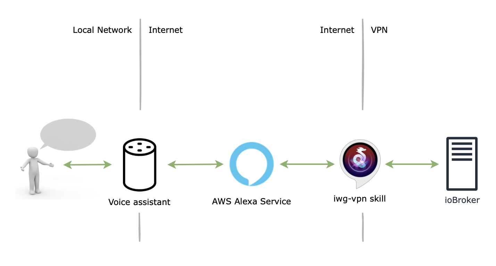
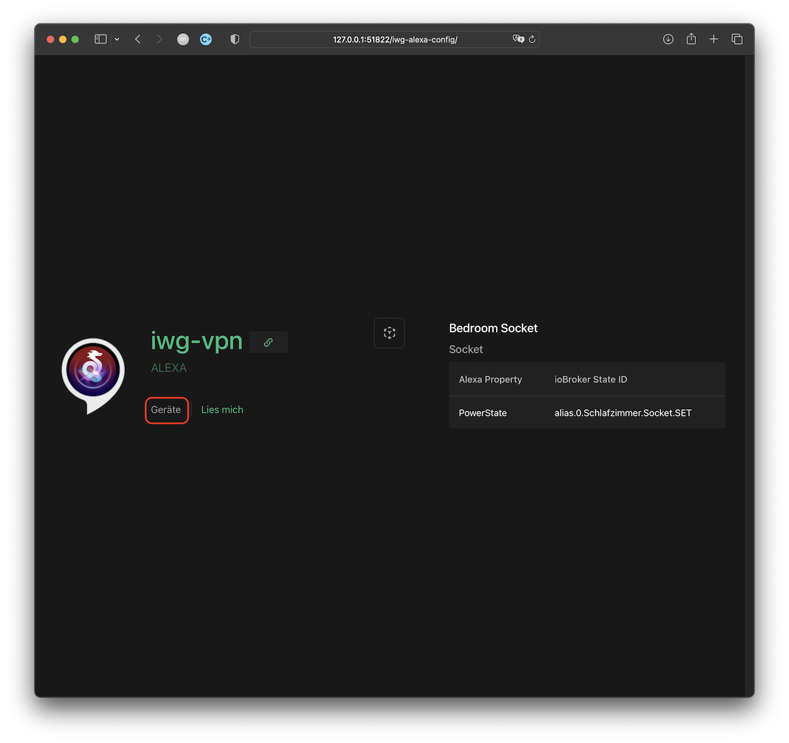
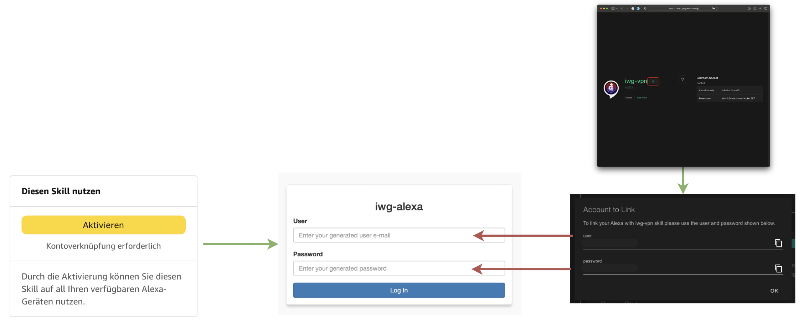

Overview
Once everything configured you'll be able to interact with your Alexa voice assistant to control your devices. The rest is taken care by your ioBroker.iwg-vpn adapter and
iwg-vpn Alexa skill.

To get started the following things need to be done:
- Configure controllable via Alexa devices using either the adapters like ioBroker.iot, ioBroker.devices or manually by creating the corresponding ioBroker states and assigning them to Rooms and Functions.
-
Activate and link the
iwg-vpn skillto your ioBroker installation - That's it :)
Please note, that the skill sends your Alexa commands to your ioBroker installation via the VPN. Even if you're not considering to use the remote access or NAT provided by the ioBroker.iwg-vpn adapter, you still have
to install WireGuard at least on your ioBroker host and set up the adapter as described
here to control your devices via Alexa.
Device Configuration
The adapter doesn't provide any means to configure the devices. If you already use the ioBroker.iot adapter to control your devices via Alexa, then you already have the devices configured and the existing configuration will be applied. If you want to start from scratch, then use any adapter of your choice, e.g. ioBroker.iot, ioBroker.devices or configure the devices manually by creating the corresponding states. In case of a manual configuration, please follow the description of the required states for different device types of ioBroker Type Detector
To see the detected on your ioBroker installation devices navigate to <your ioBroker IP>:51822/iwg-alexa-config/ and select Geräte

Next step is skill activation and account linking.
Activate the Skill and Link your ioBroker Installation
You can activate the skill using your Alexa app or via Amazon Web-Site. In this example we'll do it via the Web-Site.
Navigate to the iwg-vpn Alexa skill page, login with your Amazon account (the account your registered your Alexa with) if required and hit Aktivieren. This will take
you to the account linking page where you should log in using the credentials generated for you in the adapter UI (click on the link icon right to the iwg-vpn header):

If everything goes well your skill is activated, linked and you can start device discovery directly on the Web-Site or just asking your Alexa

Support
In case you have a question or missing a feature feel free to contact iwg.vpn@gmail.com